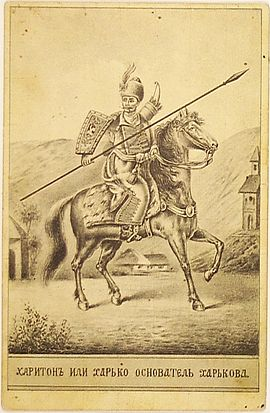

Історія
Пропонуються різні дати заснування сучасного міста на місці древнього Харківського городища - від 1630 до 1655 року. У XVIII столітті засновником міста вважався якийсь міфічний козак XVI - початку XVII століть (або навіть XVIII століття) Харко . Однак уже в XIX столітті версія про заснування міста козаком Харька була відкинута як безпідставна, тому що річка Харків вказана у Книзі Великого креслення , тобто вщент міста.
Харківці — етнохороним , назва та самоназва жителів міста Харкова та харківського регіону, з середини XVII століття до середини XX століття домінувало і в розмовній мові, і в літературі. Після встановлення радянської влади та проведення на території УРСР політики українізації , замість назви «харківці», стало домінувати назву «харків'яни Етнопохований «харківці» був початковим позначенням козаків-засновників Харківської фортеці Згодом, саме термін «харківці» використовувався для позначення мешканців Харкова як основного у працях історика Харкова та Харківського козачого полку Дмитра Багалея , чиї роботи вважаються серед найавторитетніших праць з історії міста.
Харківський публіцист Євген Плотичер у своїй роботі про Харків «Слово про рідне місто», що вийшла 2009 року, стосовно подій заснування міста використовує по відношенню до поселенців назву харківці, підкреслюючи, що в період заснування Харківської фортеці 1656—1663 років саме поселенці назв.
Вторгнення Росії в Україну в 2022 році
Після початку вторгнення Росії в Україну в 2022 році за Харків почалися бої . 24 лютого 2022 року російські війська зробили спробу фронтальної атаки по Харкову з північного заходу. Близько 12:00 частини 1-ї гвардійської танкової армії РФ підійшли на околиці міста , але увійти в саме місто їм не вдалося . Почалися обстріли кількох районів міста касетними боєприпасами , внаслідок чого не менше 9 мирних жителів загинули та 37 отримали поранення . 27 лютого у місто на бронеавтомобілях «Тигр» прорвалися російські спецназівці, які повинні були взяти під контроль основні транспортні розв'язки та закріпитися до підходу основних сил, однак були ліквідовані ЗСУ . Вранці 1 березня збройні сили РФ завдали ракетного удару по будівлі Харківської обласної державної адміністрації на площі Свободи . Також наносилися авіаудари та ракетні удари по адміністративних будівлях та промислових підприємствах, будівлі телецентру .
Зовнішні відеофайли
Яким став Харків за рік війни?
(Фільм телеведучої Ірини Ромалійської, яка прожила у Харкові 10 років)
Логотип YouTube Спеціальний репортаж (25 хв.) // Сьогодення , 18 березня 2023 року.
З початку березня 2022 року російські війська продовжили наносити по Харкову авіаудари із застосуванням
авіабомб некерованих ракет, вести обстріл міста із застосуванням ствольної артилерії та РСЗВ, заявлялося про
випадки
застосування термобаричної зброї . До середини березня за заявами мера Харкова через обстріл російськими
військами було
зруйновано цілі мікрорайони Харкова . У 2022 році за «подвиг, масовий героїзм та стійкість громадян під час
відсічі збройної агресії Російської Федерації проти України» Харкову було присвоєно звання
Місто-Герой
України !!!
На початку травня російські частини залишили ряд населених пунктів на північ від Харкова . З травня по вересень місто практично щодня зазнавало обстрілів російськими військами із застосуванням ракет, що запускалися з території Білгородської області , а також застосуванням ствольної артилерії та РСЗВ . Через обстріл міста російськими військами були зафіксовані численні факти загибелі мирних жителів, у тому числі дітей.
Фізико-географічна характеристика
Місто розташоване у північно-східній частині України на межі двох ландшафтних зон — лісостеповій та степовій. На його території річка Харків впадає в річку Лопань , яка потім впадає в річку Уди, приток Сіверського Дінця . Територія міста є горбкуватою рівнною, порізаною річковими долинами, балками і ярами. Висота над рівнем моря коливається від 94 до 205,3 м. Більшу частину міської території (близько 55% загальної площі за даними 1984) становлять піднесені ділянки з відмітками 105-192 м.
Місто знаходиться на крайньому півдні Середньоруської височини . В межах міста протікають річки Харків , Лопань, Уди, Немишля , Олексіївка, Саржинка , Очеретянка , Роганка , Студенок . Середня висота міста над рівнем моря - 135 м. Найвища точка в межах селища П'ятихатки має висоту 205,3 м, найнижча в межах селища Жихар - 94 м. Цим обумовлений відносно нерівномірний рельєф міста, розташованого на п'яти пагорбах.
Харків знаходиться за 26 кілометрів (північний кордон міста — селище П'ятихатки ) на південь від кордону з росією ( білгородська область ). Місто утворює свою агломерацію . Місто розташоване в південній частині кліматичного помірного поясу .